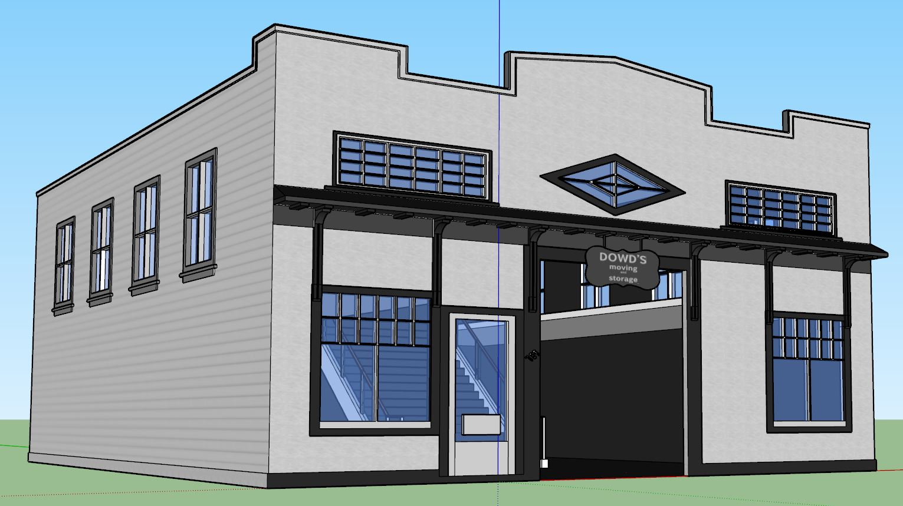
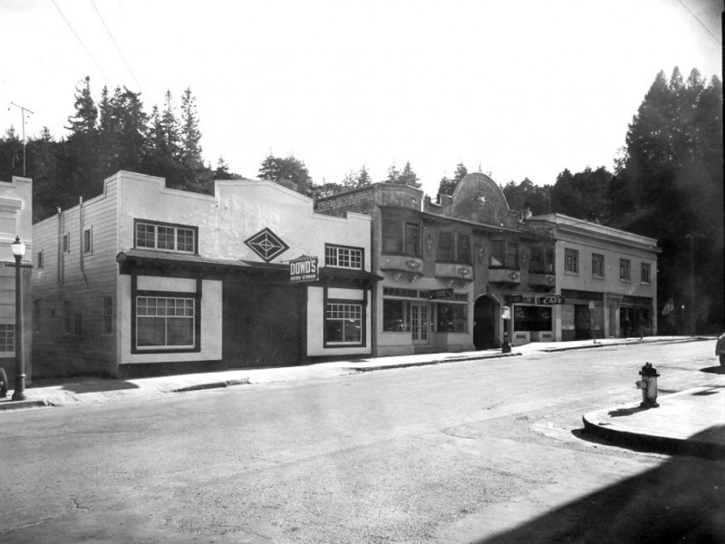

TimeWalk Unity Model
157 Throckmorton Ave., Mill Valley, CA 94941
In 1920 this building was called Dowd's Moving and Storage. This company utilized both motorized vehicles and horses.
The Dowd family, all pioneer’s of Mill Valley, established this firm in 1892. It is one of the oldest in Mill Valley. It was originally called Dowd’s Fashion Stables and maintained an elegant rig which seated 12 persons. Horses were replaced with motor trucks in 1919. In 1910 these stables burned to the ground and were replaced the following year, the building looking much as it did before the fire. In addition to hauling material, the firm rented horses and burros. The burros were hired out at the rate of 25 cents per hour or $1.50 per day for trips to the top of Mt. Tamalpais or up Cascade Canyon.
The Dowd’s also ran a mortuary on Madrona Street from 1905 to 1919, had a quarry in Cascade Canyon, and sold building supplies on the corner of Madrona and Lovell. The business was run for years by two of the Mrs. Dowds. In the 1950’s the building materials business was discontinued and concentration was on the development of the moving and storage enterprises. In 1973 the firm was sold to the two women.
 
TimeWalk Unity Model